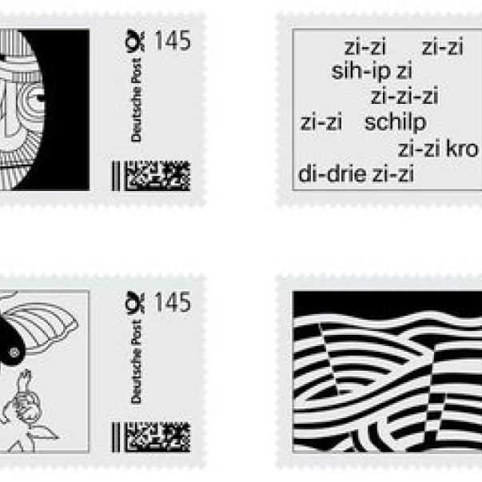

Moodboard
Le choix de style Y2K et années 50 est un choix intéressant pour notre marque d'imprimante 3D qui fait des tatouages, car cela crée une ambiance rétro qui peut attirer l'attention de notre public cible.
Le style Y2K et des années 50 sont également connus pour leur design audacieux et leur esthétique nostalgique, ce qui peut donner à notre marque une personnalité unique et mémorable.

Logo primaire
L’utilisation d’une police rétro permet de renforcer l’identité et la personnalité de notre marque. Le logo est sur 2 lignes et en minuscule, ce qui permet de mieux équilibrer les éléments.
Le choix de la palette monochrome permet de rester simple et intemporel et peut permettre une utilisation en couleur dans certains cas.
Logo secondaire
Les logos secondaires peuvent être utilisés pour ajouter de la variété et de la flexibilité à notre marque. Ils peuvent être utilisés sur des supports qui ne permettent pas l’utilisation du logo principal, comme certains produits ou des emballages, sans perdre la cohérence de l’identité visuelle.
Motif
Un motif à partir de notre logo peut être un moyen efficace d'améliorer la cohérence, l'esthétique et la reconnaissance de notre marque, tout en renforçant votre identité visuelle.
Les usages sont nombreux, tels que des éléments de design, tels que les emballages, les cartes de visite ou les brochures.
Mascottes
L'utilisation de mascottes dans notre identité visuelle peut aider à renforcer notre marque et à la rendre plus reconnaissable. Les mascottes peuvent donner une personnalité à votre entreprise et aider à créer une relation de confiance avec votre public cible.
Elles sont utilisées pour représenter des éléments clés de notre entreprise, tels que une imprimante 3D et une aiguille de tatouage.
Palette de couleur
Le choix d'une palette de couleurs noir et blanc peut donner une impression de sophistication et de simplicité, ce qui convient parfaitement à notre entreprise qui utilise une technologie innovante mais complexe pour créer des tatouages 3D.
Le choix de ces couleurs crée une esthétique minimaliste et aide à renforcer l'image professionnelle et haut de gamme de notre entreprise.
Typograhie
La police d’écriture Erica One, utilisée pour les titres, évoque l’esthétisme des années 50 par son trait gras et ce style rétro. C’est une police d’écriture mémorable qui permet d’améliorer la reconnaissance de notre marque.
Work Sans, pour le texte secondaire, est moderne, épurée et facile à lire. Elle permet d’équilibrer notre identité visuelle.
Erica One
Work Sans
Produits
Les 2 modèles d’imprimante 3D que nous proposons, une permanente et une semi permanente, permettent à nos clients de choisir l’option qui correspond le mieux à leur besoins.
Les encres de tatouages sont un élément crucial pour des tatouages de qualité. Nous proposons une variété de couleur pour répondre aux besoins des clients.
Les stickers sont un excellent moyen de promouvoir notre entreprise et d’attirer de nouveaux clients.
Prototype
N'hésitez pas à tester le prototype de notre site web Prinskin
[Pensez à rafraîchir la page si le prototype s'affiche mal]